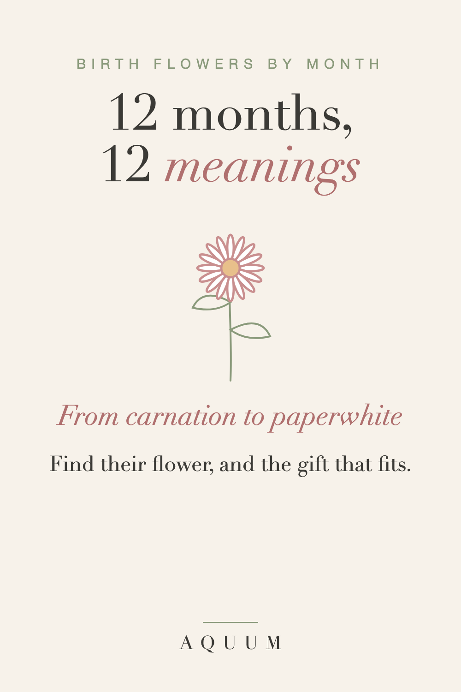

Birth Flowers by Month: Meanings and Gift Ideas for All 12
2026-09-30
This article may contain affiliate links. How that works.

Birth flowers work the way birthstones do: each month has one, sometimes two, and each carries a traditional meaning. That meaning is what turns a flower into a good gift. A rose is nice; a rose because it's the flower of their month, and because it stands for love in all its forms, is something they'll remember.
This guide lists the main flower for each month, the second flower many traditions add, and who each one suits best as a gift.
Want all twelve on one page? Download our free printable birth flower chart.
January: Carnation
Also: snowdrop. The carnation stands for love that doesn't give up and deep admiration. January birthdays land right after the holidays and often get overshadowed, which makes the carnation a thoughtful choice for a mother or grandmother whose day always gets lost in the post-holiday rush. Read the full January guide.
February: Violet
Also: primrose. The violet means quiet loyalty and modesty. It's a good February gift for a partner or an old friend, especially if you'd rather give something other than another red heart. Read the full February guide.
March: Daffodil
Also: jonquil. The daffodil is the flower of new beginnings and hope that comes back after winter. It suits anyone starting over: a move, a new job, a recovery. Read the full March guide.
April: Daisy
Also: sweet pea. The daisy stands for innocence and uncomplicated joy. It's a natural fit for new mothers, preschool teachers and little April daughters. Read the full April guide.
May: Lily of the Valley
Also: hawthorn. Lily of the valley means the return of happiness. It's the flower of many bridal bouquets, so it works beautifully for May brides and anniversaries. Read the full May guide.
June: Rose
Also: honeysuckle. The rose means love in all its forms, and the color changes the message: yellow for friendship, white for respect, pink for gratitude, red for romance. Read the full June guide.
July: Larkspur
Also: water lily. Larkspur stands for an open heart and a strong bond. It's the flower for the friend who stopped being just a friend years ago, and for sisters. Read the full July guide.
August: Gladiolus
Also: poppy. The gladiolus means strength of character and integrity. Give it to someone you admire for getting through something hard: nurses, caregivers, the person who held the family together. Read the full August guide.
September: Aster
Also: morning glory. The aster stands for wisdom and patience. With the school year starting, it's the flower for teachers and mentors. Read the full September guide.
October: Marigold
Also: cosmos. The marigold means warmth and love that stays. It's closely tied to remembrance, which makes it a gentle gift for someone who is missing a person they loved. Read the full October guide.
November: Chrysanthemum
The chrysanthemum stands for honest friendship and good fortune. It arrives with the season of giving thanks, so it works as a thank-you as much as a birthday gift. Read the full November guide.
December: Narcissus (Paperwhite)
Also: holly. The paperwhite narcissus means renewal and good wishes for what's ahead. For anyone whose birthday gets folded into Christmas, it's a way to give a gift that is only for their birthday. Read the full December guide.
How to choose a birth flower gift
- Start with the meaning, not the month. The meaning is what they'll repeat when they show it to someone.
- Think about who they are. A mother, a teacher, a sister: most flowers have a natural recipient.
- Pick something they'll use. Fresh flowers last a week. A mug, a tote or a shirt with their flower keeps the meaning around all year.
- Write the meaning in the card. One sentence is enough, and it's the part people keep.
Gift guides by person
- Birth flower gifts for mom
- Birth flower gifts for teachers
- December birthday gift ideas that aren't Christmas gifts
Not sure which month's flower is yours? See what is my birth flower, and for the other flower of each month, our guide to second birth flowers.
Have a birthday in mind? Try the birth flower finder.